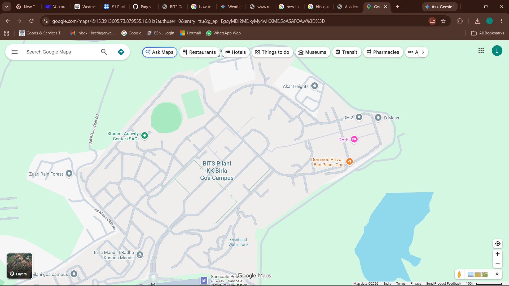

Campus weather
Loading…
BITS Goa • 15.3914, 73.8796
Built from your Google Maps screenshot + manually marked covered paths.

In rain or high rain probability, covered paths receive a lower routing cost. In dry conditions, the planner can favor the shorter open-road route while still showing a covered alternative.
Weather is fetched from Open-Meteo when the page is hosted online. Routing still works if weather cannot be fetched.